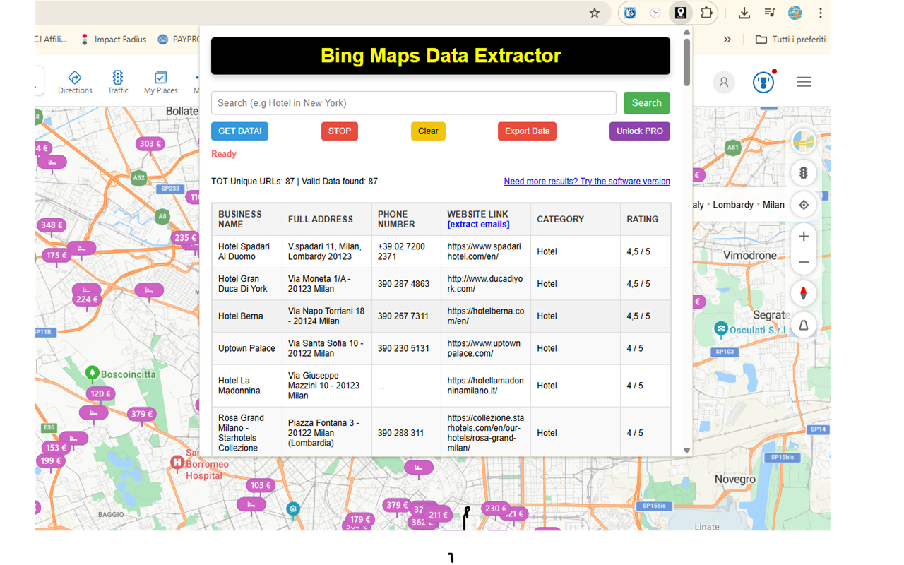
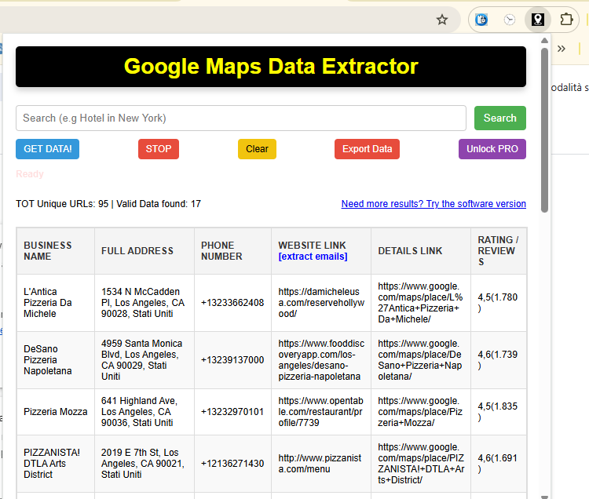

GOOGLE / BING Maps Data Extractor
Need to extract business listings from Google Maps quickly and effortlessly? Say hello to Maps Data Extractor — the ultimate Chrome extension for harvesting detailed business information directly from Google Maps results with just a few clicks.
Whether you're building lead lists, conducting market research, or managing local SEO campaigns, this tool automates the process of collecting key data like business names, addresses, phone numbers, websites, ratings, reviews, and more — straight from Google Maps.
No more manual copy-pasting or tedious clicking. Maps Data Extractor lets you export data from search results or places pages into clean, structured CSV files — ready for spreadsheets, CRMs, or any other workflow. It’s fast, efficient, and incredibly user-friendly.
🗺️ How to Use
- Install the extension BING MAPS EXTRACTOR from the Chrome Web Store.
- If you need GOOGLE MAPS EXTRACTOR you can install it from this page.
- Go to BING Maps or GOOGLE Maps and enter your search query (e.g., “coffee shops in New York”).
- Click the extension icon to open the data extraction panel.
- Select how many results to extract (supports up to hundreds of entries depending on pagination).
- Click “Start” to begin extraction — the extension will automatically collect the data.
- Once done, export the results as a CSV file for easy access and use.
📷 Screenshots


✅ Features
- Extract business data from Bing or Google Maps search results and individual place pages
- Captures name, address, phone number, website, rating, reviews, and more
- Exports data to clean CSV files compatible with Excel, Google Sheets, CRMs, etc.
- Supports bulk extraction from paginated listings
- No coding required — extremely simple and intuitive interface
- Great for marketers, sales teams, and local SEO professionals
📷 Video Tutorial
Whether you're building lead lists, conducting market research, or managing local SEO campaigns, MAPS DATA Exporter helps you keep your conversations safe and accessible — forever.
View on Chrome Web Store